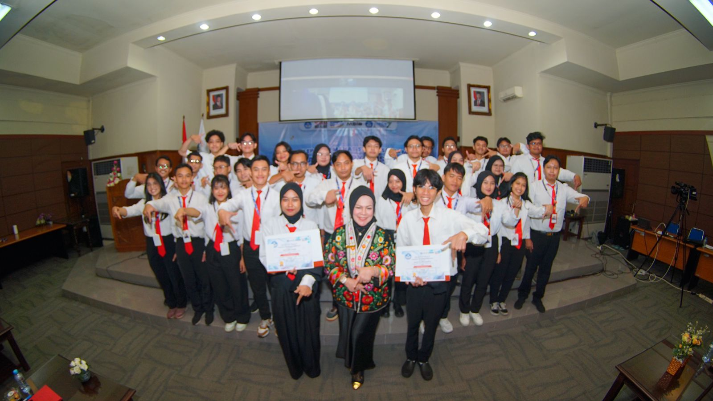
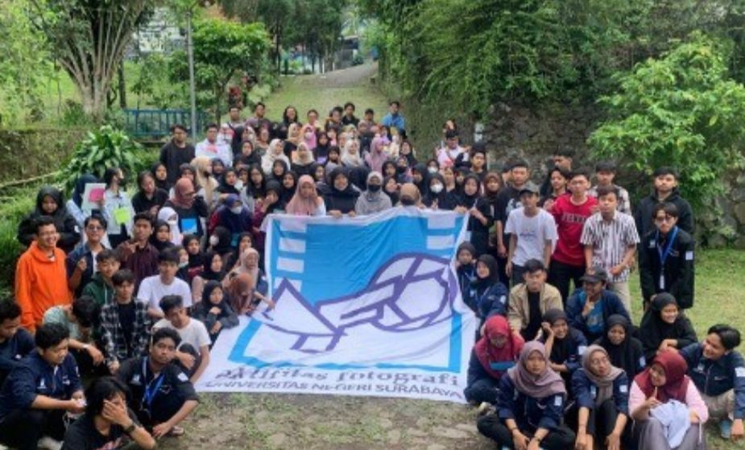

Front-end Developer / UI Designer
Saya adalah mahasiswa Teknik Informatika di Universitas Negeri Surabaya, saat ini berada di semester 6. Saya memiliki pemahaman mendalam tentang ilmu komputer dan telah mengembangkan berbagai keterampilan praktis yang diperlukan dalam bidang ini. Dengan minat yang kuat dalam Frontend Development, saya berkomitmen untuk menciptakan antarmuka pengguna yang fungsional dan responsif serta memastikan pengalaman pengguna yang optimal. Saya selalu bersemangat untuk belajar dan mengembangkan keterampilan saya lebih lanjut dalam pengembangan web, terutama dalam hal HTML, CSS, JavaScript, serta framework Laravel. Dengan motivasi tinggi untuk sukses di dunia profesional, saya bertekad untuk terus berinovasi dan memberikan kontribusi terbaik dalam setiap proyek yang saya kerjakan. Saya percaya bahwa kombinasi pengetahuan teknis dan keterampilan di bidang frontend development akan membantu saya dalam menciptakan solusi yang efektif dan user-friendly.
Jurusan Mipa (Rata-rata nilai 85/100)
(2019 - 2022)
S1 Teknik Informatika (IPK 3.50/4.00)
(2022 - Sekarang)
Junior Frontend Developer | Lembaga Layanan Pendidikan Tinggi Wilayah 7 Jawa Timur
(September 2024 – Desember 2024)
Mengembangkan Sitem Web berbasis Laravel 11 yang dinamakan KLIK 7. Website ini di rancang khusus untuk mempermudah Pengajuan Tunjangan dan pengelolaan informasi kinerja dosen guna meningkatkan efisiensi dan akurasi dalam proses administrasi. Menyusun dokumentasi untuk aplikasi KLIK7, Termasuk pembuatan manual book dan desain logo, untuk memastikan aplikasi mudah digunakan dan memiliki identitas merek yang kuat Berpartisipasi dalam presentasi hasil pengembangan kepada mentor dan stakeholder untuk mendapatkan feedback dan memastikan kesesuaian dengan tujuan proyek
Anggota UKM Fotografi UNESA (Sep 2022 – Feb 2024)
Saya aktif mengikuti berbagai kegiatan yang diselenggarakan oleh UKM Fotografi, seperti menghadiri sesi pelatihan dan workshop untuk meningkatkan pemahaman tentang teknik fotografi, komposisi, serta pengeditan foto. Selain itu, saya juga terlibat dalam kegiatan pemotretan berbagai acara kampus, seperti seminar, konferensi, dan pertemuan organisasi, guna mendokumentasikan momen-momen penting di lingkungan universitas. Saya juga berpartisipasi dalam pameran fotografi yang diadakan oleh UKM Fotografi sebagai sarana untuk memamerkan karya, berbagi inspirasi, dan menjalin relasi dengan sesama pecinta fotografi.
Mendesain ulang tampilan Website Pemerintahan Kabupaten Pacitan Menggunakan Figma dan Prototype sehingga tampilannya lebih menarik, responsif, user-friendly, dan nyaman digunakan bagi pengguna.
Membuat desain UI/UX aplikasi Mobile "CINEMAIN" untuk Pemesanan Tiket Bioskop Online Menggunakan Figma dengan focus pada antarmuka pengguna sehingga menghasilkan tampilan visual yang lebih segar, ringan, modern, intuitif dan menarik.
Mengembangkan sistem web berbasis Laravel 11 yang dinamakan KLIK7. Website ini dirancang khusus untuk mempermudah pengajuan tunjangan dan pengelolaan informasi kinerja dosen. berguna meningkatkan dengan desain yang efisien dan akurat dalam proses administrasi.